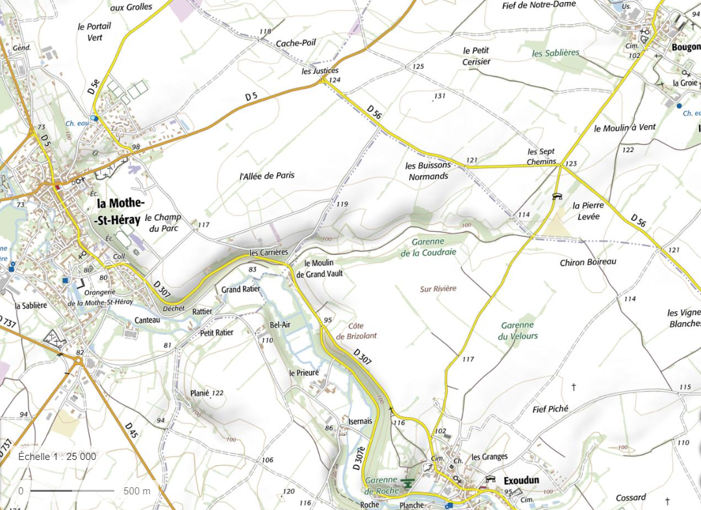
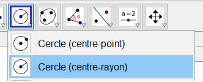

La géolocalisation par satellite
Exercice 1 : Trilatération dans le plan
En vacances chez sa grand-mère dans le petit village de Bougon dans les Deux-Sèvres, Léa s'en va faire une balade dans la campagne en emportant une carte au 1/25 000 de la région. Au bout d'un certain temps, elle ne sait plus vraiment où elle est

Elle sait juste qu'elle est située dans un triangle formé par Bougon, La Mothe-Saint-Héray et Exoudun. Elle entend midi sonner aux différentes églises environnantes et elle a le réflexe de regarder à quelle heure précise elle entend sonner chacune des églises :
elle entend sonner l'église Saint-Édouard d'Exoudun à 12 h 00 min et 3 s ;
elle entend sonner l'église Saint-Héray à 12 h 00 min et 6 s ;
elle entend sonner l'église Saint-Pierre de Bougon à 12 h 00 min et 7 s.
Question
Sachant que ces trois églises sont synchronisées, que Léa a réglé sa montre sur l'heure donnée par l'église Saint-Pierre de Bougon en arrivant chez sa grand-mère et que le son se propage dans l'air à la vitesse de 340 m/s, déterminer l'emplacement approximatif de Léa sur la carte.
Pour vous aider, vous avez à disposition un fichier GéoGebra pour les constructions :
copier-coller le url suivant dans la barre de recherche popur télécharger le fichier Trilateration_depart.ggb: http://sciences-ingenieur.genevoix-signoret-vinci.fr/SNT/6-cartographie/res/trilateration_depart.ggb
Geogebra 6 en ligne:
Indice 1
Déterminer la distance entre Léa et chacune des 3 églises.
Indice 2
Avec l'échelle de la carte sur GéoGebra, convertir les distances.
Indice 3

L'ensemble des points situés à une même distance d'un autre point est un cercle.
Sur GéoGebra, utiliser l'outil Cercle (centre-rayon) pour dessiner un cercle dont on connaît le centre et le rayon.
Fonctionnement d'un GPS
Comment fonctionne un GPS ? (Source : chaîne YouTube du CNES, Centre National d'Études Spatiales )
Galiléo : fonctionnement du GPS européen (Source : chaîne YouTube UNISCIEL, Groupement d'Intérêt Scientifique pour l'enseignement des Sciences)
La localisation par satellite : principe de fonctionnement
Bilan
Exercice 2 : notions à retenir
Par combien de satellites faut-il être visible pour pouvoir être localiser?
Quelles informations sont envoyées par les 3 satellites gérant la trilatération?
3.Quelle information est envoyée par le satellite gérant la synchronisation des horloges?
A quelle vitesse se déplacent les ondes radios émises par un satellite?
Combien de satellites constituent le système Galiléo?
Quel est le rôle des centres de contrôles et des stations au sol?
🧠 Teste tes connaissances
Réponds aux questions puis clique sur « Vérifier » — la correction s'affiche aussitôt.
1. À quelle vitesse le son se propage-t-il dans l'air selon l'exercice de trilatération ?
2. En géométrie, l'ensemble des points situés à une même distance d'un point donné forme :